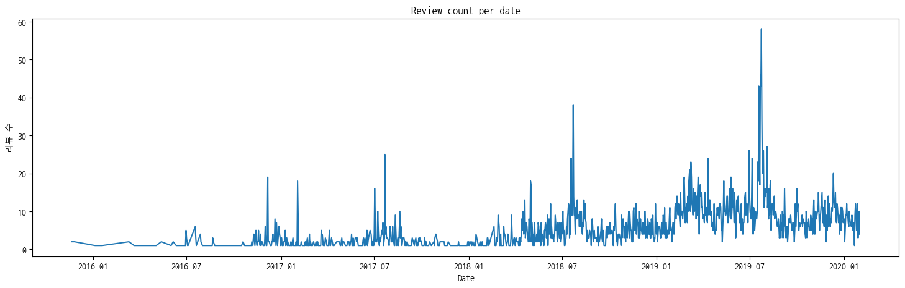
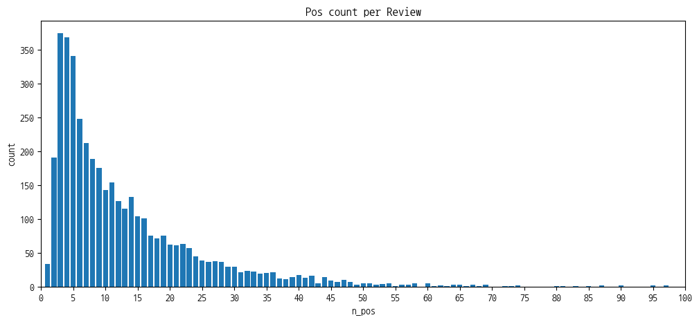
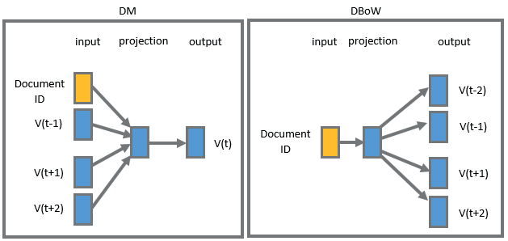

import pandas as pd
# 한글 크롤링 -> LG씽큐 앱 리뷰 데이터
data = pd.read_csv("data/한글 크롤링.csv")
# datetime으로 바꾸는건데 안해도됨됨
year = [i[0] for i in data["Date"].str.split("년")]
month = [i[1].split("월")[0].strip().zfill(2) for i in data["Date"].str.split("년")]
day = [i[1].split("월")[1].replace("일","").strip().zfill(2) for i in data["Date"].str.split("년")]
data['Date'] = pd.to_datetime(["-".join(i) for i in zip(year,month,day)])Day1 실습
미니프로젝트 Day1
◆ 0. 데이터 불러오기
import matplotlib.pyplot as plt
import matplotlib as mpl
plt.rc('font', family='NanumGothicCoding')
mpl.rcParams['axes.unicode_minus'] = False
review_per_date = pd.DataFrame(data['Date'].value_counts()).sort_values('Date')
plt.figure(figsize=(18,5))
plt.plot(review_per_date)
plt.xlabel("Date")
plt.ylabel("리뷰 수")
plt.title("Review count per date")
plt.show()
◆ 1. 데이터 전처리하기
- 1.1. 특수문자 및 숫자 제거
- 1.2. 의미없는 짧은 글 제거
1.1. 특수문자 및 숫자 제거
*정규표현식 사용import re
from tqdm import tqdm
pattern = r"[^a-zA-Z0-9가-힣\s\.\?\!]"
new_review = []
for i in tqdm(data['Review']):
text = re.sub(pattern, "", i)
new_review.append(text)
data['Review_clean'] = new_review
data.head()100%|██████████| 6280/6280 [00:00<00:00, 599800.28it/s]| Date | Name | Score | Review | like | Review_clean | |
|---|---|---|---|---|---|---|
| 0 | 2020-01-24 | 홍현주 | 3 | 시스템에어컨 5대 연결해서 원격제어로 사용중입니다. 에어컨 기능은 공기청정기능까지 ... | 2 | 시스템에어컨 5대 연결해서 원격제어로 사용중입니다. 에어컨 기능은 공기청정기능까지 ... |
| 1 | 2020-01-07 | 쌤쌤 | 3 | 인덕션 제어용으로 사용하려고 하는데 끄는 전용인건 좋은데 원격제어기능이 계속 꺼져야... | 0 | 인덕션 제어용으로 사용하려고 하는데 끄는 전용인건 좋은데 원격제어기능이 계속 꺼져야... |
| 2 | 2020-01-08 | Nicholas Jun | 1 | 위례 사는 신혼 부부입니다. TV랑 공기청정기는 잘 연동시켰습니다. 오래 걸리지도 ... | 0 | 위례 사는 신혼 부부입니다. TV랑 공기청정기는 잘 연동시켰습니다. 오래 걸리지도 ... |
| 3 | 2020-01-24 | Hong KIM | 1 | 세탁기 된다고 해서 연결했는데 놀라울 정도로 세상 쓰레기에요. 연결은 번거롭고 사용... | 0 | 세탁기 된다고 해서 연결했는데 놀라울 정도로 세상 쓰레기에요. 연결은 번거롭고 사용... |
| 4 | 2020-01-22 | byung-hyun cho | 3 | 건조완료후 에어리플레쉬를 원격으로도 추가할 수 있도록 건조완료후 원격제어를 off하... | 0 | 건조완료후 에어리플레쉬를 원격으로도 추가할 수 있도록 건조완료후 원격제어를 off하... |
1.2. 의미없는 짧은 글 제거
df = data.drop([i for i,j in enumerate(data["Review_clean"]) if len(j) <10])
df.head()| Date | Name | Score | Review | like | Review_clean | |
|---|---|---|---|---|---|---|
| 0 | 2020-01-24 | 홍현주 | 3 | 시스템에어컨 5대 연결해서 원격제어로 사용중입니다. 에어컨 기능은 공기청정기능까지 ... | 2 | 시스템에어컨 5대 연결해서 원격제어로 사용중입니다. 에어컨 기능은 공기청정기능까지 ... |
| 1 | 2020-01-07 | 쌤쌤 | 3 | 인덕션 제어용으로 사용하려고 하는데 끄는 전용인건 좋은데 원격제어기능이 계속 꺼져야... | 0 | 인덕션 제어용으로 사용하려고 하는데 끄는 전용인건 좋은데 원격제어기능이 계속 꺼져야... |
| 2 | 2020-01-08 | Nicholas Jun | 1 | 위례 사는 신혼 부부입니다. TV랑 공기청정기는 잘 연동시켰습니다. 오래 걸리지도 ... | 0 | 위례 사는 신혼 부부입니다. TV랑 공기청정기는 잘 연동시켰습니다. 오래 걸리지도 ... |
| 3 | 2020-01-24 | Hong KIM | 1 | 세탁기 된다고 해서 연결했는데 놀라울 정도로 세상 쓰레기에요. 연결은 번거롭고 사용... | 0 | 세탁기 된다고 해서 연결했는데 놀라울 정도로 세상 쓰레기에요. 연결은 번거롭고 사용... |
| 4 | 2020-01-22 | byung-hyun cho | 3 | 건조완료후 에어리플레쉬를 원격으로도 추가할 수 있도록 건조완료후 원격제어를 off하... | 0 | 건조완료후 에어리플레쉬를 원격으로도 추가할 수 있도록 건조완료후 원격제어를 off하... |
◆ 2. 데이터 형태소 분리하기
- 2.1 불용어적용 및 형태소 분리
- 2.2 데이터 프레임에 추가
2.1. 불용어적용 및 형태소 분리
*제공되는 한국어 불용어 파일 사용(ko-stopwords.csv)from konlpy.tag import Okt
okt=Okt()
#원하는 태그 추출 & 불용어 제거
stopword_df = pd.read_csv('data/ko-stopwords.csv')
stopwords = list(stopword_df['stopwords'])
def okt_pos_tagging(string):
pos_words = okt.pos(string, stem=True, norm=True) # norm은 약간의 오타 교정
tagged_list=[]
for word, tag in pos_words:
if tag in ['Noun', 'Adjective', 'Verb']:
if word not in stopwords:
tagged_list.append(word)
if len(tagged_list) == 0 :
tagged_list.append("None")
return tagged_list2.2 데이터 프레임에 추가
df['tagged_review'] = df['Review_clean'].apply(okt_pos_tagging)
df.head()| Date | Name | Score | Review | like | Review_clean | tagged_review | |
|---|---|---|---|---|---|---|---|
| 0 | 2020-01-24 | 홍현주 | 3 | 시스템에어컨 5대 연결해서 원격제어로 사용중입니다. 에어컨 기능은 공기청정기능까지 ... | 2 | 시스템에어컨 5대 연결해서 원격제어로 사용중입니다. 에어컨 기능은 공기청정기능까지 ... | [시스템, 에어컨, 대다, 연결하다, 격, 제어, 사용, 에어컨, 기능, 공기청정기... |
| 1 | 2020-01-07 | 쌤쌤 | 3 | 인덕션 제어용으로 사용하려고 하는데 끄는 전용인건 좋은데 원격제어기능이 계속 꺼져야... | 0 | 인덕션 제어용으로 사용하려고 하는데 끄는 전용인건 좋은데 원격제어기능이 계속 꺼져야... | [인덕션, 제어, 용, 사용, 끄다, 전용, 건, 좋다, 격, 제어기, 능이, 계속... |
| 2 | 2020-01-08 | Nicholas Jun | 1 | 위례 사는 신혼 부부입니다. TV랑 공기청정기는 잘 연동시켰습니다. 오래 걸리지도 ... | 0 | 위례 사는 신혼 부부입니다. TV랑 공기청정기는 잘 연동시켰습니다. 오래 걸리지도 ... | [위례, 살다, 신혼, 부부, 공기청정기, 자다, 연동, 걸리다, 않다, 문제, 김... |
| 3 | 2020-01-24 | Hong KIM | 1 | 세탁기 된다고 해서 연결했는데 놀라울 정도로 세상 쓰레기에요. 연결은 번거롭고 사용... | 0 | 세탁기 된다고 해서 연결했는데 놀라울 정도로 세상 쓰레기에요. 연결은 번거롭고 사용... | [세탁기, 연결하다, 정도, 세상, 쓰레기, 연결, 번거롭다, 사용성, 까다롭다, ... |
| 4 | 2020-01-22 | byung-hyun cho | 3 | 건조완료후 에어리플레쉬를 원격으로도 추가할 수 있도록 건조완료후 원격제어를 off하... | 0 | 건조완료후 에어리플레쉬를 원격으로도 추가할 수 있도록 건조완료후 원격제어를 off하... | [건조, 완료, 후, 에어, 리플, 레쉬, 원격, 추가, 수, 건조, 완료, 후, ... |
df["n_pos"] = [len(i) for i in df['tagged_review']]
pos_per_review = df.groupby("n_pos").count()
plt.figure(figsize=(12,5))
plt.bar(pos_per_review.index, pos_per_review['tagged_review'])
plt.xlabel("n_pos")
plt.xticks(range(0,250,5))
plt.ylabel("count")
plt.title('Pos count per Review')
plt.xlim(0,100)
plt.show()
◆ 3. 벡터화
- 3.1 doc2vec 준비(문서의 순서 매기기)
- 3.2 doc2vec 학습시키기
- 3.3 벡터 값 데이터 프레임에 추가
3.1 doc2vec 준비
- word2vec은 단어 하나를 하나의 vector화
- doc2vec은 문서 하나를 하나의 vector화
from gensim.models import doc2vec
from gensim.models.doc2vec import TaggedDocument
# doc2vec
tagged_corpus_list = []
for i, token in enumerate(df.tagged_review):
tag = "document {}".format(i)
tagged_corpus_list.append(TaggedDocument(tags=[tag], words = token))
print('문서의 수 :', len(tagged_corpus_list))문서의 수 : 40613.2 doc2vec 학습시키기
<model 하이퍼파라미터 값>
# vector_size : 생성할 문서 벡터의 크기
# alpha: 모델 학습시 초기 학습률 0.025는 일반적으로 사용됨
# min_alpha: 학습 과정에서 alpha 값을 이 값으로 줄여나가게 됩니다
# window : 문맥 윈도우 크기, 주변 몇개의 단어의 문맥을 고려하여 학습하는가#doc2vec모델
model = doc2vec.Doc2Vec(vector_size=100, alpha=0.025, min_alpha=0.025, window=8)
# Vocabulary 빌드
model.build_vocab(tagged_corpus_list)
# Doc2Vec 학습
#epochs가 너무 많이 돌아가면 과적합의 가능성 / 학습속도 느려짐
model.train(tagged_corpus_list, total_examples=model.corpus_count, epochs=5)3.3 벡터 값 데이터 프레임에 추가
vector_list = []
for i in tqdm(range(len(df))):
doc2vec = model.dv["document {}".format(i)]
vector_list.append(doc2vec)
df['vetor'] = vector_list100%|██████████| 4061/4061 [00:00<00:00, 636797.84it/s]df.head()| Date | Name | Score | Review | like | Review_clean | tagged_review | n_pos | vetor | |
|---|---|---|---|---|---|---|---|---|---|
| 0 | 2020-01-24 | 홍현주 | 3 | 시스템에어컨 5대 연결해서 원격제어로 사용중입니다. 에어컨 기능은 공기청정기능까지 ... | 2 | 시스템에어컨 5대 연결해서 원격제어로 사용중입니다. 에어컨 기능은 공기청정기능까지 ... | [시스템, 에어컨, 대다, 연결하다, 격, 제어, 사용, 에어컨, 기능, 공기청정기... | 48 | [-0.039625153, 0.01851053, -0.021416439, -0.03... |
| 1 | 2020-01-07 | 쌤쌤 | 3 | 인덕션 제어용으로 사용하려고 하는데 끄는 전용인건 좋은데 원격제어기능이 계속 꺼져야... | 0 | 인덕션 제어용으로 사용하려고 하는데 끄는 전용인건 좋은데 원격제어기능이 계속 꺼져야... | [인덕션, 제어, 용, 사용, 끄다, 전용, 건, 좋다, 격, 제어기, 능이, 계속... | 40 | [-0.011139594, -0.013532177, -0.030620487, -0.... |
| 2 | 2020-01-08 | Nicholas Jun | 1 | 위례 사는 신혼 부부입니다. TV랑 공기청정기는 잘 연동시켰습니다. 오래 걸리지도 ... | 0 | 위례 사는 신혼 부부입니다. TV랑 공기청정기는 잘 연동시켰습니다. 오래 걸리지도 ... | [위례, 살다, 신혼, 부부, 공기청정기, 자다, 연동, 걸리다, 않다, 문제, 김... | 58 | [-0.030485945, 0.00868939, 0.015364446, -0.005... |
| 3 | 2020-01-24 | Hong KIM | 1 | 세탁기 된다고 해서 연결했는데 놀라울 정도로 세상 쓰레기에요. 연결은 번거롭고 사용... | 0 | 세탁기 된다고 해서 연결했는데 놀라울 정도로 세상 쓰레기에요. 연결은 번거롭고 사용... | [세탁기, 연결하다, 정도, 세상, 쓰레기, 연결, 번거롭다, 사용성, 까다롭다, ... | 32 | [-0.010480184, 0.0110085625, -0.0012623551, -0... |
| 4 | 2020-01-22 | byung-hyun cho | 3 | 건조완료후 에어리플레쉬를 원격으로도 추가할 수 있도록 건조완료후 원격제어를 off하... | 0 | 건조완료후 에어리플레쉬를 원격으로도 추가할 수 있도록 건조완료후 원격제어를 off하... | [건조, 완료, 후, 에어, 리플, 레쉬, 원격, 추가, 수, 건조, 완료, 후, ... | 45 | [-0.015105196, -0.01366063, -0.035027415, -0.0... |
◆ 4. 병합 계층적 클러스터링
- 4.1 ward 기준으로 덴드로그램 그려보기
- 4.2 실루엣 지수 확인해서 토픽 갯수 정하기
- 4.3 가장 적절한 클러스터링 갯수 df에 삽입
from scipy.cluster.hierarchy import dendrogram, linkage
from matplotlib import pyplot as plt4.1 ward 기준으로 덴드로그램 그려보기
4.2 실루엣 지수 확인해서 토픽 갯수 정하기
from sklearn.metrics.cluster import silhouette_score
from sklearn.cluster import AgglomerativeClustering4.3 가장 적절한 클러스터링 갯수 df에 삽입
◆ 5. 해석하기:TF-IDF
- 문서 내에서 어떤 단어가 얼마나 중요한지를 평가하는 데 사용되는 방법
- 5.1 TF-IDF 계산
- 5.2 데이터프레임으로 만들고 정렬하기
5.1 TF-idf 계산
- 각 클러스터 마다 tfidf가 높은 워드들 찾기
- 각 클러스터들을 하나의 문서로 가정하여 tf-idf 값 추출
from collections import Counter
import numpy as np
from sklearn.feature_extraction.text import TfidfVectorizer